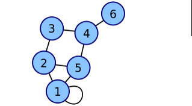
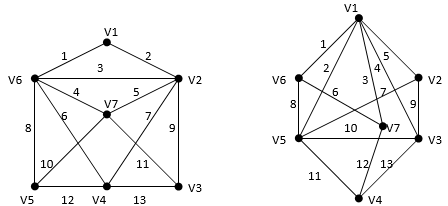

Графы. Общие сведения.
Матрица смежности.
Матрица смежности графа G с конечным числом вершин n (пронумерованных числами от 1 до n) — это квадратная матрица n*n, в которой значение элемента ij равно числу рёбер из i-й вершины графа в j-ю вершину.
2. Постройте матрицу инцидентности.
3. Укажите степени вершин графа. Содержит ли граф Эйлеровую цепь? Эйлеровый цикл?
4. Составьте простую цепь длины 5 из вершины V2 в V5.

Элемент [1,2] равен количеству ребер в графе направленных из 1 вершины во 2 вершину. Элемент [3,5] равен количеству ребер в графе направленных из 3 вершины в 5 вершину. Первая вершина инцидентна петле, т.е. элемент [1,1] равен 1. Т.к. больше петель нет, то можно увидеть, что остальные элементы главной диагонали матрицы равны 0.
Вариант 2.

1. Составьте для него матрицу смежности. 2. Постройте матрицу инцидентности.
3. Укажите степени вершин графа. Содержит ли граф Эйлеровую цепь? Эйлеровый цикл?
4. Составьте простую цепь длины 5 из вершины V2 в V5.